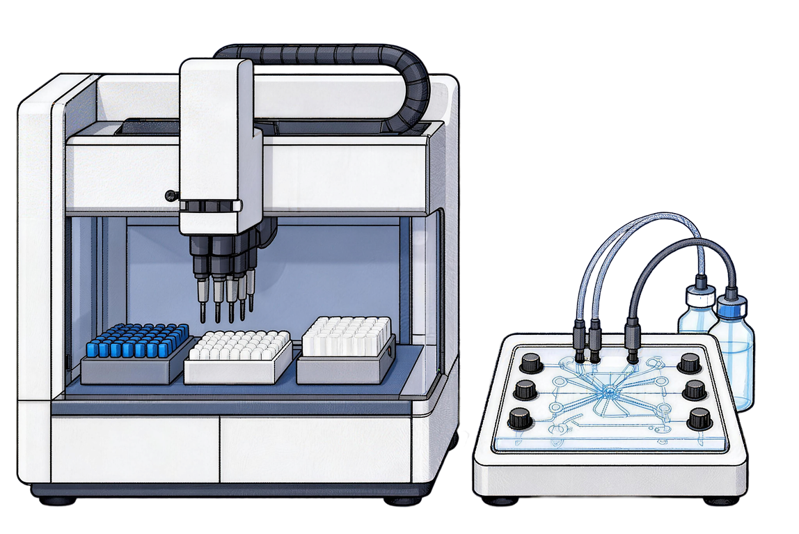

新一代蛋白质大模型 书生·AMix
让蛋白质像文字一样被大模型读和写
蛋白质 · 文本统一空间
读蛋白质语言
理解与提取
蛋白质
写蛋白质语言
生成与描述
通过和真实世界对齐，从蛋白质语言的 GPT3 迈向 ChatGPT 时刻
50倍
转录因子效率提升
87倍
基因编辑酶活性提升
70%
生物酶下游产量提升
通专融合的自然语言 · 蛋白质语言模型
Prompt对野生型转录调控蛋白 AmeR（219 aa）开展定向进化：以 progen_nll 为单目标适应度，进行 10 轮「生成–评估–选择」，每轮生成 30 条候选并保留 Top-10，迭代逼近自然序列分布。
▸ Awaiting prompt
真实世界对齐
MNKTIDDVRKGDRASDLPVRRRPRRSAEETRRDILAKAEELFRERGFNAVAIADI
ASALNMSPANVFKHFSSKNAIVDAIGLGQIGTFERQIPPLDKSHAPLDRLRHLAR
SLMEQHHQDHFKHDRVFIQILETAKQDMETGDYYKRVIAKPLAEIIRDGVEAGLF
PATDIDVLAETVLSALTYVIHPVLIAGEDIGTLATRVDQLVDLILAGLRNPLAK
ASALNMSPANVFKHFSSKNAIVDAIGLGQIGTFERQIPPLDKSHAPLDRLRHLAR
SLMEQHHQDHFKHDRVFIQILETAKQDMETGDYYKRVIAKPLAEIIRDGVEAGLF
PATDIDVLAETVLSALTYVIHPVLIAGEDIGTLATRVDQLVDLILAGLRNPLAK
◀ best progen_nll 2.27 · Top-1 L76I 75/100 · 16×100% 高频位点 · 21 单点突变库 · 综合 56.5/100
高通量定向进化湿实验沙盒
待启动

温控 37℃
搅拌 220rpm
测序 ON